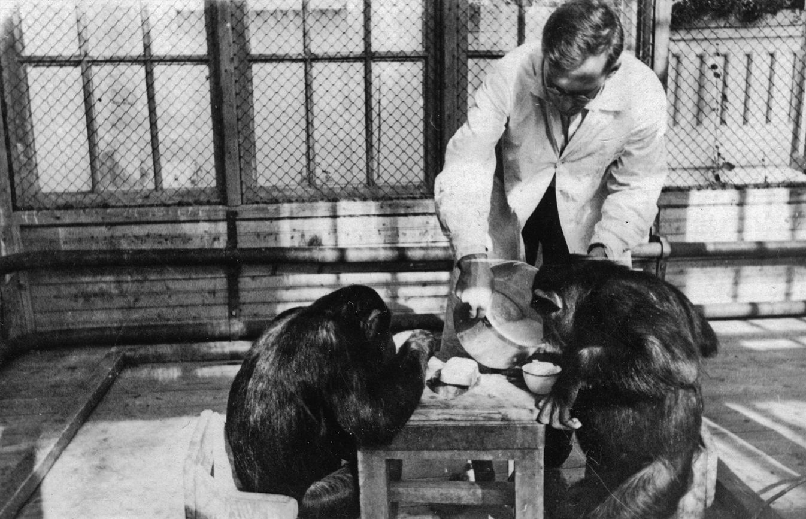
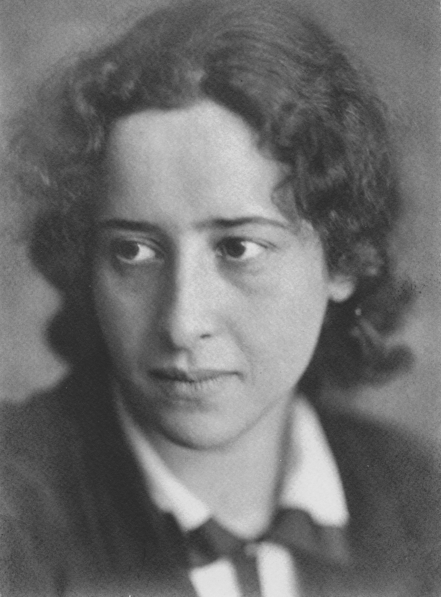

Desacuerdos Productivos y Receptividad a Opiniones Contrarias
The core chronological overview of the text remains undisputed (Minson 2026, xxv).
El verdadero problema no está en la existencia de los desacuerdos, como sí en el modo en que los abordamos (y los supuestos, a menudo falsos, sobre los que actuamos durante esos momentos). Minson quisiera equiparnos con las herramientas prácticas (¡basadas en la evidencia!) que son útiles para tener lo que denomina desacuerdos constructivos
, es decir, desacuerdos en que las partes involucradas se marchan con una mayor disposición a hablarse de nuevo (Minson 2026, xxv). Dichas herramientas se subsumen en lo que Minson llama receptividad a opiniones contrarias
. Define este constructo como la disposición a acceder, considerar y evaluar los puntos de vista tanto en favor como en contra de algún asunto, de una manera imparcial
(Minson 2026, 21).1
El acento no está puesto en la persuasión, y ni siquiera en el acuerdo sobre algún punto medio. De hecho, las investigaciones de Minson parecen indicar que aproximarnos a los desacuerdos con el objetivo de cambiar la opinión de la contraparte no es más que una buena manera de convertir un desacuerdo en un conflicto.

Motivaciones para la Receptividad
En la raíz, casi todo lo que acaba saliendo mal en los desacuerdos viene del realismo ingenuo: nuestra natural tendencia a asumir irreflexivamente que el mundo es tal y como lo percibimos, que nuestros juicios acerca de la realidad son con certeza verdaderos. Entramos en la conversación con alguien más teniendo la incuestionada e incuestionable convicción de que nosotros estamos en lo cierto y la otra persona sencillamente está equivocada. De aquí se desprende otro automatismo
psicológico igualmente perjudicial: la atribución.2
Probando que somos inteligentes
Habiendo establecido que la otra persona obviamente está equivocada, generamos todo tipo de explicaciones (y nos las creemos) sobre las causas y motivos del presunto error ajeno. La otra persona no solo está equivocada, sino que está equivocada porque no es lo suficientemente inteligente, no ha investigado tanto, tiene malas intenciones, es incapaz de ver las cosas como son, etc. Nuestra perseverancia en el realismo ingenuo y las atribuciones nos apartan de cualquier desacuerdo constructivo que pudiéramos haber tenido.
Esta es una prueba de la jerarquía diseñada
A collection of textile samples lay spread out on the table - Samsa was a travelling salesman - and above it there hung a picture that he had recently cut out of an illustrated magazine and housed in a nice, gilded frame. It showed a lady fitted out with a fur hat and fur boa who sat upright, raising a heavy fur muff that covered the whole of her lower arm towards the viewer. Gregor then turned to look out the window at the dull weather. Drops of rain could be heard hitting the pane, which made him feel quite sad. How about if I sleep a little bit longer and forget all this nonsense
, he thought, but that was something he was unable to do because he was used to sleeping on his right, and in his present state couldn't get into that position.

One morning, when Gregor Samsa woke from troubled dreams, he found himself transformed in his bed into a horrible vermin. He lay on his armour-like back, and if he lifted his head a little he could see his brown belly, slightly domed and divided by arches into stiff sections. The bedding was hardly able to cover it and seemed ready to slide off any moment. His many legs, pitifully thin compared with the size of the rest of him, waved about helplessly as he looked. What's happened to me?
he thought. It wasn't a dream. His room, a proper human room although a little too small, lay peacefully between its four familiar walls.
In a badly designed book, the letters mill and stand like starving horses in a field. In a book designed by rote, they sit like stale bread and mutton on the page. In a well-made book, where designer, compositor and printer have all done their jobs, no matter how many thousands of lines and pages, the letters are alive. They dance in their seats. Sometimes they rise and dance in the margins and aisles.
A collection of textile samples lay spread out on the table - Samsa was a travelling salesman - and above it there hung a picture that he had recently cut out of an illustrated magazine and housed in a nice, gilded frame. It showed a lady fitted out with a fur hat and fur boa who sat upright, raising a heavy fur muff that covered the whole of her lower arm towards the viewer. Gregor then turned to look out the window at the dull weather. Drops of rain could be heard hitting the pane, which made him feel quite sad. How about if I sleep a little bit longer and forget all this nonsense
, he thought, but that was something he was unable to do because he was used to sleeping on his right, and in his present state couldn't get into that position.
- First primary observation with a broad scope.
- Secondary point, which branches into specifics:
- Sub-point addressing the first structural variant.
- Sub-point addressing historical context.
- Concluding elements bind the argument.
- Primary historical argument or thesis statement.
- Secondary consideration with deeper structural sub-points:
- First sub-premise under the secondary consideration (note the counter resets to 1).
- Second sub-premise, requiring empirical verification.
- An unexpected architectural tangent:
- An unordered observation sitting inside an ordered framework.
- A secondary illustrative point using geometric markers.
- Tertiary macro argument returning cleanly back to the root margin level.
However hard he threw himself onto his right, he always rolled back to where he was. He must have tried it a hundred times, shut his eyes so that he wouldn't have to look at the floundering legs, and only stopped when he began to feel a mild, dull pain there that he had never felt before. Oh, God
, he thought, what a strenuous career it is that I've chosen! Travelling day in and day out. Doing business like this takes much more effort than doing your own business at home, and on top of that there's the curse of travelling, worries about making train connections, bad and irregular food, contact with different people all the time so that you can never get to know anyone or become friendly with them. It can all go to Hell!
He felt a slight itch up on his belly; pushed himself slowly up on his back towards the headboard so that he could lift his head better; found where the itch was, and saw that it was covered with lots of little white spots which he didn't know what to make of; and when he tried to feel the place with one of his legs he drew it quickly back because as soon as he touched it he was overcome by a cold shudder. He slid back into his former position. Getting up early all the time
, he thought.
| Designation | Proportion | Value (px) |
|---|---|---|
| The Golden Section | 1 : 1.618 | 21.03 |
| Perfect Fifth | 2 : 3 | 19.50 |
| Perfect Fourth | 3 : 4 | 17.33 |
- Por sus siglas en inglés, podemos referirnos a esto como rov, receptiveness to opposing views.↩
- A wonderful serenity has taken possession of my entire soul, like these sweet mornings of spring which I enjoy with my whole heart. I am alone, and feel the charm of existence in this spot, which was created for the bliss of souls like mine. I am so happy, my dear friend, so absorbed in the exquisite sense of mere tranquil existence, that I neglect my talents. I should be incapable of drawing a single stroke at the present moment; and yet I feel that I never was a greater artist than now. When, while the lovely valley teems with vapour around me, and the meridian sun strikes the upper surface of the impenetrable foliage of my trees, and but a few stray gleams steal into the inner sanctuary, I throw myself down among the tall grass by the trickling stream; and, as I lie close to the earth, a thousand unknown plants are noticed by me: when I hear the buzz of the little world among the stalks, and grow familiar with the countless indescribable forms of the insects and flies, then I feel the presence of the Almighty, who formed us in his own image, and the breath.↩
Referencias
Dinámicas de la Receptividad en Debates Digitales Estructurados. Revista de Psicología Social Aplicada, 42(3), 145–168.
https://doi.org/10.1007/s11229-022-03535-y
https://doi.org/10.4324/9781003154471